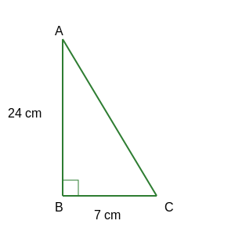

1. In ∆ABC, right-angled at B, AB = 24 cm, BC = 7 cm. Determine:

(i) sin A, cos A
By Pythagoras Theorem: \(AC^2 = AB^2 + BC^2\)
\(AC^2 = (24)^2 + (7)^2 = 576 + 49 = 625\)
\(AC = \sqrt{625} = 25 \text{ cm}\)
For angle A: Base (Adj) = AB = 24, Perpendicular (Opp) = BC = 7.
\(\sin A = \frac{\text{Opp}}{\text{Hyp}} = \frac{7}{25}\)
\(\cos A = \frac{\text{Adj}}{\text{Hyp}} = \frac{24}{25}\)
Therefore, the required value is \(\sin A = \frac{7}{25}, \cos A = \frac{24}{25}\).
(ii) sin C, cos C
For angle C: Base (Adj) = BC = 7, Perpendicular (Opp) = AB = 24.
\(\sin C = \frac{\text{Opp}}{\text{Hyp}} = \frac{24}{25}\)
\(\cos C = \frac{\text{Adj}}{\text{Hyp}} = \frac{7}{25}\)
Therefore, the required value is \(\sin C = \frac{24}{25}, \cos C = \frac{7}{25}\).
2. In Fig., find tan P – cot R.

In ∆PQR right-angled at Q:
Given \(PQ = 12 \text{ cm}, PR = 13 \text{ cm}\).
By Pythagoras Theorem: \(QR^2 = PR^2 - PQ^2\)
\(QR^2 = (13)^2 - (12)^2 = 169 - 144 = 25\)
\(QR = \sqrt{25} = 5 \text{ cm}\)
\(\tan P = \frac{\text{Opp}}{\text{Adj}} = \frac{QR}{PQ} = \frac{5}{12}\)
\(\cot R = \frac{\text{Adj}}{\text{Opp}} = \frac{QR}{PQ} = \frac{5}{12}\)
\(\tan P - \cot R = \frac{5}{12} - \frac{5}{12} = 0\)
Therefore, the required value is 0.
3. If sin A = 3/4, calculate cos A and tan A.

Given \(\sin A = \frac{3}{4}\).
\(\sin A = \frac{\text{Perpendicular}}{\text{Hypotenuse}}\).
Let Perpendicular (BC) = 3k and Hypotenuse (AC) = 4k.
Using Pythagoras Theorem: \(AB^2 = AC^2 - BC^2\)
\(AB^2 = (4k)^2 - (3k)^2 = 16k^2 - 9k^2 = 7k^2\)
\(AB = \sqrt{7k^2} = \sqrt{7}k\)
\(\cos A = \frac{\text{Base}}{\text{Hypotenuse}} = \frac{AB}{AC} = \frac{\sqrt{7}k}{4k} =
\frac{\sqrt{7}}{4}\)
\(\tan A = \frac{\text{Perpendicular}}{\text{Base}} = \frac{BC}{AB} = \frac{3k}{\sqrt{7}k} =
\frac{3}{\sqrt{7}}\)
Therefore, the required value is \(\cos A = \frac{\sqrt{7}}{4}, \tan A =
\frac{3}{\sqrt{7}}\).
4. Given 15 cot A = 8, find sin A and sec A.

Given \(15 \cot A = 8 \Rightarrow \cot A = \frac{8}{15}\).
\(\cot A = \frac{\text{Base}}{\text{Perpendicular}}\).
Let Base = 8k and Perpendicular = 15k.
By Pythagoras Theorem: \(\text{Hyp}^2 = \text{Base}^2 +
\text{Perp}^2\)
\(\text{Hyp}^2 = (8k)^2 + (15k)^2\)
\(\text{Hyp}^2 = 64k^2 + 225k^2 = 289k^2\)
\(\text{Hyp} = \sqrt{289k^2} = 17k\)
\(\sin A = \frac{\text{Perpendicular}}{\text{Hypotenuse}} = \frac{15k}{17k} = \frac{15}{17}\)
\(\sec A = \frac{\text{Hypotenuse}}{\text{Base}} = \frac{17k}{8k} = \frac{17}{8}\)
Therefore, the required value is \(\sin A = \frac{15}{17}, \sec A = \frac{17}{8}\).
5. Given sec θ = 13/12, calculate all other trigonometric ratios.

Given \(\sec \theta = \frac{13}{12}\).
\(\sec \theta = \frac{\text{Hypotenuse}}{\text{Base}}\).
Let Hypotenuse = 13k and Base = 12k.
By Pythagoras Theorem: \(\text{Perp}^2 = \text{Hyp}^2 -
\text{Base}^2\)
\(\text{Perp}^2 = (13k)^2 - (12k)^2\)
\(\text{Perp}^2 = 169k^2 - 144k^2 = 25k^2\)
\(\text{Perpendicular} = \sqrt{25k^2} = 5k\)
\(\sin \theta = \frac{5}{13}\)
\(\cos \theta = \frac{12}{13}\)
\(\tan \theta = \frac{5}{12}\)
\(\text{cosec } \theta = \frac{13}{5}\)
\(\cot \theta = \frac{12}{5}\)
Therefore, the required value is \(\sin \theta = \frac{5}{13}, \cos \theta =
\frac{12}{13}, \tan \theta = \frac{5}{12}, \text{cosec } \theta = \frac{13}{5}, \cot \theta =
\frac{12}{5}\).
6. If ∠A and ∠B are acute angles such that cos A = cos B, then show that ∠A = ∠B.

Consider a triangle ABC right-angled at C.
\(\cos A = \frac{\text{Base}}{\text{Hypotenuse}} = \frac{AC}{AB}\) \((\text{Definition})\)
\(\cos B = \frac{\text{Base}}{\text{Hypotenuse}} = \frac{BC}{AB}\)
Given \(\cos A = \cos B\).
\(\frac{AC}{AB} = \frac{BC}{AB}\)
\(\Rightarrow AC = BC\)
We know that angles opposite to equal sides are equal.
\(\Rightarrow \angle A = \angle B\)
Therefore, \(\angle A = \angle B\). Hence Proved.
7. If cot θ = 7/8, evaluate:

(i) \(\frac{(1 + \sin \theta)(1 - \sin \theta)}{(1 + \cos \theta)(1 - \cos \theta)}\)
Using identity \((a+b)(a-b) = a^2 - b^2\):
\(= \frac{1 - \sin^2 \theta}{1 - \cos^2 \theta}\)
Using identities \(1 - \sin^2 \theta = \cos^2 \theta\) and \(1 - \cos^2 \theta = \sin^2 \theta\):
\(= \frac{\cos^2 \theta}{\sin^2 \theta}\)
\(= \left(\frac{\cos \theta}{\sin \theta}\right)^2 = (\cot \theta)^2\)
Given \(\cot \theta = \frac{7}{8}\).
\(= \left(\frac{7}{8}\right)^2 = \frac{49}{64}\)
Therefore, the required value is \(\frac{49}{64}\).
(ii) \(\cot^2 \theta\)
Given \(\cot \theta = \frac{7}{8}\).
\(\cot^2 \theta = (\frac{7}{8})^2\)
Therefore, the required value is \(\frac{49}{64}\).
8. If 3 cot A = 4, check whether \(\frac{1 - \tan^2 A}{1 + \tan^2 A} = \cos^2 A - \sin^2
A\) or not.

\(3 \cot A = 4 \Rightarrow \cot A = \frac{4}{3} \Rightarrow \tan A = \frac{3}{4}\).
Let Base = 4k, Perpendicular = 3k.
Hypotenuse = \(\sqrt{(4k)^2 + (3k)^2} = \sqrt{16k^2 + 9k^2} = \sqrt{25k^2} = 5k\).
LHS: \(\frac{1 - \tan^2 A}{1 + \tan^2 A} = \frac{1 - (3/4)^2}{1 + (3/4)^2}\)
\(= \frac{1 - 9/16}{1 + 9/16} = \frac{(16-9)/16}{(16+9)/16} = \frac{7}{25}\)
RHS: \(\cos^2 A - \sin^2 A\)
\(\cos A = \frac{4}{5}, \sin A = \frac{3}{5}\)
\(= (\frac{4}{5})^2 - (\frac{3}{5})^2 = \frac{16}{25} - \frac{9}{25} = \frac{7}{25}\)
LHS = RHS.
Therefore, the required value is True (Yes).
9. In ∆ ABC right angled at B, if tan A = \(1/\sqrt{3}\), find the value of:

\(\tan A = \frac{1}{\sqrt{3}}\). This corresponds to \(\tan 30^\circ\).
So, \(\angle A = 30^\circ\).
Since \(\angle B = 90^\circ\), \(\angle C = 180^\circ - (90^\circ + 30^\circ) = 60^\circ\).
(i) \(\sin A \cos C + \cos A \sin C\)
\(= \sin 30^\circ \cos 60^\circ + \cos 30^\circ \sin 60^\circ\)
\(= (\frac{1}{2})(\frac{1}{2}) + (\frac{\sqrt{3}}{2})(\frac{\sqrt{3}}{2})\)
\(= \frac{1}{4} + \frac{3}{4} = \frac{4}{4} = 1\)
Therefore, the required value is 1.
(ii) \(\cos A \cos C - \sin A \sin C\)
\(= \cos 30^\circ \cos 60^\circ - \sin 30^\circ \sin 60^\circ\)
\(= (\frac{\sqrt{3}}{2})(\frac{1}{2}) - (\frac{1}{2})(\frac{\sqrt{3}}{2})\)
\(= \frac{\sqrt{3}}{4} - \frac{\sqrt{3}}{4} = 0\)
Therefore, the required value is 0.
10. In ∆ PQR, right-angled at Q, PR + QR = 25 cm and PQ = 5 cm. Determine the values of
sin P, cos P and tan P.

Given \(PQ = 5\) and \(PR + QR = 25 \Rightarrow PR = 25 - QR\).
Using Pythagoras Theorem: \(PQ^2 + QR^2 = PR^2\)
\(5^2 + QR^2 = (25 - QR)^2\)
\(25 + QR^2 = 625 + QR^2 - 50QR\)
\(50QR = 600 \Rightarrow QR = 12 \text{ cm}\)
\(PR = 25 - 12 = 13 \text{ cm}\)
\(\sin P = \frac{QR}{PR} = \frac{12}{13}\)
\(\cos P = \frac{PQ}{PR} = \frac{5}{13}\)
\(\tan P = \frac{QR}{PQ} = \frac{12}{5}\)
Therefore, the required value is \(\sin P = \frac{12}{13}, \cos P = \frac{5}{13}, \tan
P = \frac{12}{5}\).
11. State whether the following are true or false. Justify your answer.

(i) The value of tan A is always less than 1.
False. In the given figure, if we take Opposite = 12k and
Adjacent = 5k, then \(\tan A = \frac{12k}{5k} = 2.4\), which is greater than 1.
(ii) \(\sec A = 12/5\) for some value of angle A.
True. \(\sec A = \frac{\text{Hypotenuse}}{\text{Adjacent}}\).
Since Hyp > Adj is always true
(12 > 5), this is possible.
(iii) cos A is the abbreviation used for the cosecant of angle A.
False. \(\cos A\) is cosine. Cosecant is \(\text{cosec } A\).
(iv) cot A is the product of cot and A.
False. \(\cot A\) refers to the cotangent of angle A. \(\cot\)
separated from A has no
meaning.
(v) \(\sin \theta = 4/3\) for some angle \(\theta\).
False. \(\sin \theta =
\frac{\text{Opposite}}{\text{Hypotenuse}}\). Hypotenuse must be greater
than Opposite side. Here 4/3 > 1, which is impossible.